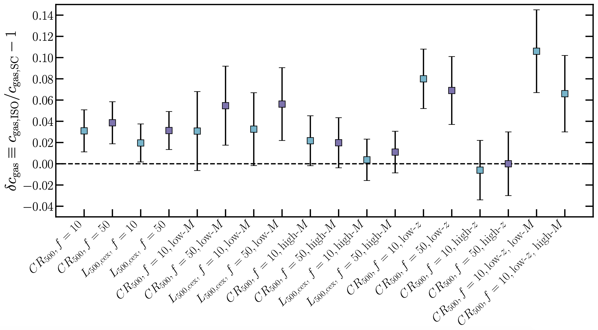
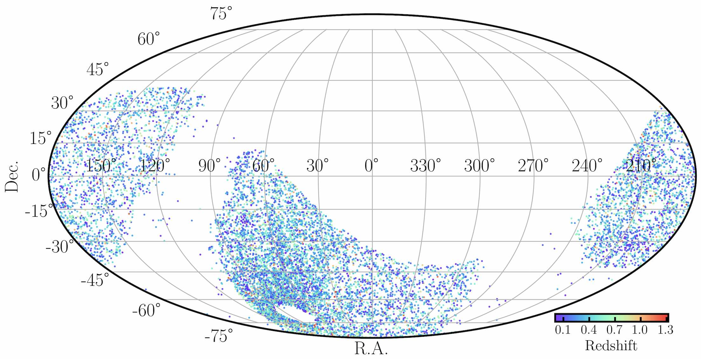
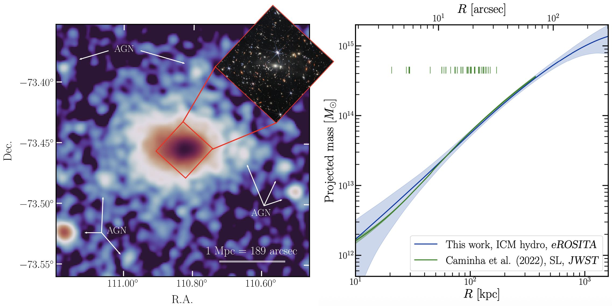
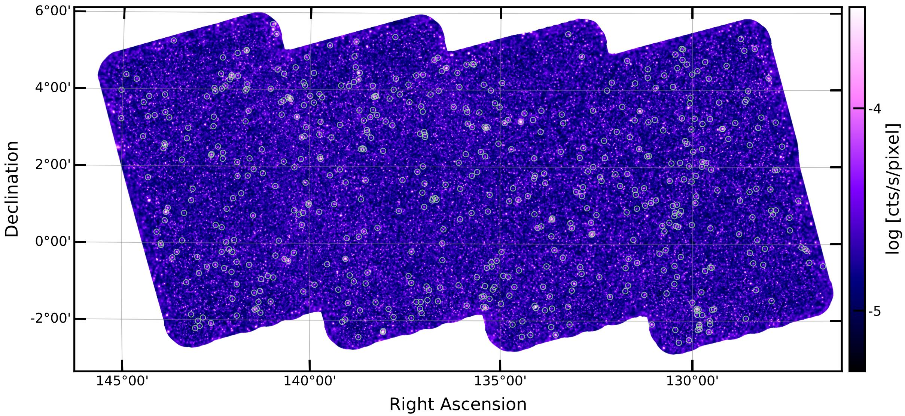
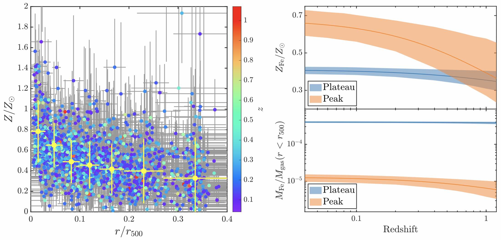

I study galaxy clusters and groups by observing and analyzing the X-ray emission from the hot gas in these objects. I'm interested in many aspects on clusters and groups: dynamical and thermodynamical properties, chemical evolution, AGN feedback, wide-field cluster surveys, etc. I also study large-scale structures in the Universe such as superclusters using big samples of galaxy clusters.
Research highlights: Progress in supercluster astrophysics with the eROSITA All-Sky Survey
We discover 1300 supercluster systems in the first eROSITA All-Sky Survey (eRASS1).
This is the largest-ever supercluster sample detected in the X-ray band.
The video below shows the large-scale structure in the nearby Universe revealed by
the eRASS1 superclusters, and the comparison with galaxy distribution.
The colored dots are galaxy clusters that are identified as members of supercluster systems.
The smaller grey dots are galaxies from the SDSS survey.
(Liu et al. 2024, A&A, 683, A130)
In another work, we study the effect of large-scale environment on cluster properties using the eRASS1 superclusters.
We find that isolated clusters are more concentrated than supercluster members
in both gas mass and total mass. The signal is stronger for higher overdensity ratio,
and for low-mass clusters.
These results are consistent with the prediction of halo assembly bias on
cluster-scales.
(Liu et al. 2024, A&A, 688, A186)

Research highlights: The eRASS1 catalog of galaxy clusters and groups
We detect and optically confirm 12247 galaxy clusters and groups in the first eROSITA All-Sky Survey (eRASS1).
The clusters in the sample span the redshift range 0.003 < z < 1.32.
Nearly 90% of these clusters are discovered for the first time in the X-ray band.
(Bulbul et al. 2024, A&A, 685, A106)

Research highlights: X-ray analysis of JWST's first galaxy cluster lens SMACS J0723.3-7327
SMACS J0723.3-7327 is the first galaxy cluster lens observed by James Webb Space Telescope (JWST).
With the X-ray data of eROSITA and Chandra, we measure the hydrostatic mass profile, and find a good agreement with the mass distribution obtained from
strong lensing analysis based on JWST data.
(Liu et al. 2023, A&A, 670, A96)

Research highlights: The eFEDS galaxy cluster catalog
The eROSITA Final Equatorial-Depth Survey (eFEDS)
is a mini-survey performed during the PV phase of eROSITA. eFEDS covers a sky area
of ~140 square degrees, with extensive multiwavelength data from optical
to radio.
In eFEDS, we detect more than 500 cluster candidates, and ~90 superclusters and cluster pairs.
(Liu et al. 2022, A&A, 661, A2)

Research highlights: Chemical evolution of galaxy clusters
Another interesting topic I'm working on is the
evolution of iron in the ICM across cosmic time.
By dissecting the iron mass budget in ~200 clusters, we find that understanding the spatial
distribution of iron in the ICM is a key point to study the
chemical enrichment history of clusters. We establish a model to
describe ICM iron distribution, integrating multiple
components which are dominating at different scales and associated with various
physical processes (namely an iron peak and an iron plateau). We study the properties of these
components with Chandra X-ray data, and successfully unveil
their roles in the picture of chemical evolution of galaxy clusters.
(Liu et al. 2020, A&A, 637, A58)
(Liu et al. 2019, MNRAS, 485, 1651)
(Liu et al. 2018, MNRAS, 481, 361)

Research highlights: Study ICM dynamics with X-ray CCD data
Another line of my research is to study the dynamical properties
of galaxy clusters by mapping the X-ray redshift (and thus the line-of-sight velocity)
of the intracluster medium.
Thanks to the angular resolution of Chandra and high
signal-to-noise CCD spectra, we are able to detect interesting signatures
of bulk motions, core-sloshing, and global rotation in a few clusters.
(Liu et al. 2019, MNRAS, 485, 3909)
(Liu et al. 2018, ApJ, 863, 102)
(Liu et al. 2016, ApJ, 821, 29)
(Liu et al. 2015, ApJ, 809, 27)